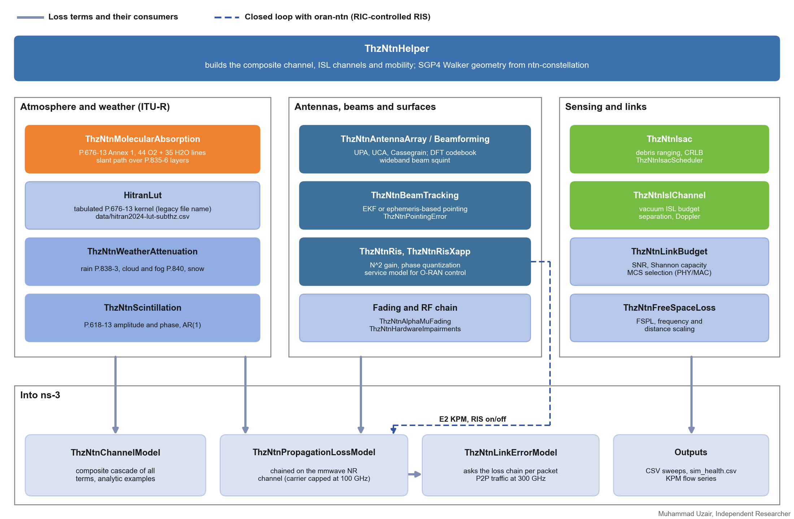
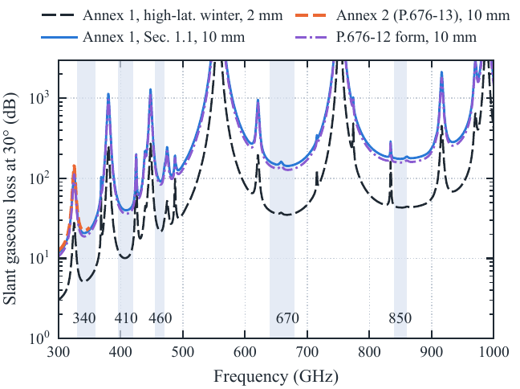
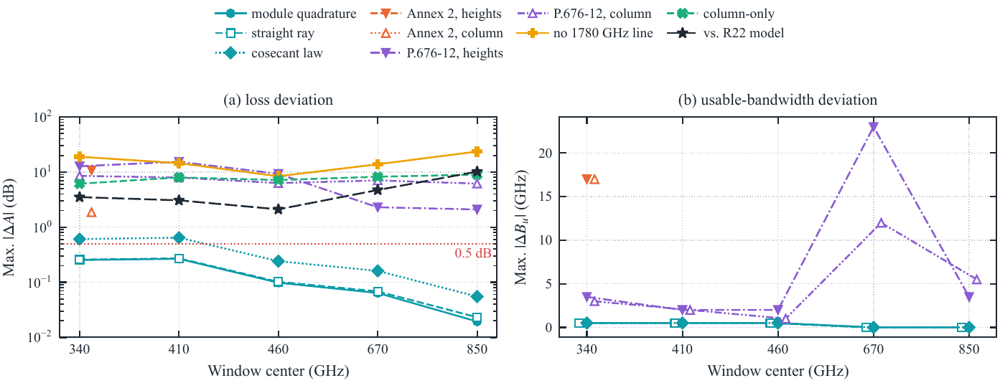
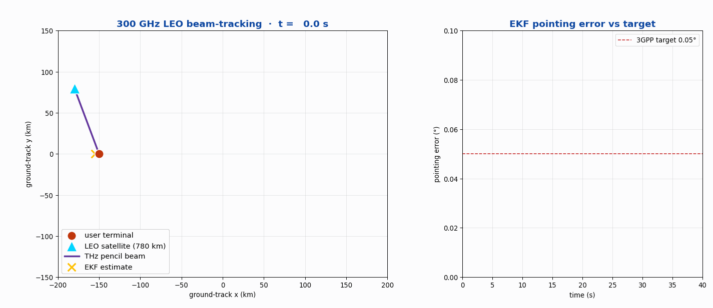
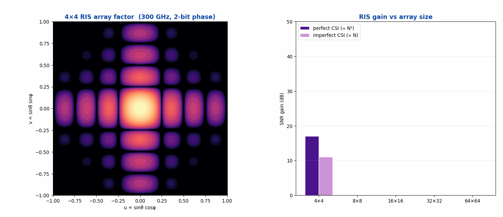

thz-ntn¶
Sub-terahertz and terahertz non-terrestrial links for ns-3, 100 GHz to 1 THz, built on the ITU-R recommendations rather than fitted curves


Toolkit · Docs · Install · Examples · Results
Why this module¶
Above 100 GHz the atmosphere stops being a detail. Molecular absorption, rain, fog and scintillation each move a space-to-ground budget by tens of decibels, and a model that gets one of them wrong by a factor of two still produces a coverage map that looks plausible.
thz-ntn implements each term from its recommendation and says which one: ITU-R P.676-13 Annex 1 line-by-line absorption (44 O2 and 35 H2O lines) integrated over the P.835-6 reference atmospheres, P.838-3 rain, P.840 cloud and fog, and P.618-13 scintillation. On top of the channel it adds ultra-massive MIMO arrays with beam squint, reconfigurable intelligent surfaces (RIS), EKF beam tracking with pointing error, integrated sensing and communication (ISAC), inter-satellite links and alpha-mu fading. The losses enter ns-3 as real PropagationLossModels, so they attenuate packets instead of decorating a CSV.
System design¶

Figure 1. Classes and data flow. The atmosphere, weather, antenna and pointing terms feed three consumers: ThzNtnChannelModel for the analytic sweeps, ThzNtnPropagationLossModel chained on the mmwave NR spectrum channel (carrier at most 100 GHz, the limit of the 3GPP model), and ThzNtnLinkErrorModel, which carries IP packets at 300 GHz on a point-to-point link. The RIS can be switched by an xApp through oran-ntn. Source: doc/figures/make_architecture.py.
Results¶
The results verify the absorption engine, ThzNtnMolecularAbsorption, which the channel, link-budget and propagation-loss classes all call. They come from a study that swept the engine with the thz-ntn-absorption-sweep example and compared it with a reference: the same P.676-13 Annex 1 kernel and P.835-6 atmospheres integrated along a refracted ray, plus the P.676-13 Annex 2 and P.676-12 approximations. Sweeps, scripts and outputs are in paper/thz-2026-gaseous-absorption/ of the toolkit tree (cpp_sweeps.sh runs the example; analysis.py writes the numbers).
Experiment. Deterministic evaluations on fixed grids, so no random seeds apply. The six P.835-6 atmospheres, each scaled to the precipitable water vapor (PWV) columns from 0.5 to 50 mm that it can hold, give 26 realizable atmospheres; with seven elevations from 10 to 90 degrees they form the operable domain at each window. A Python transcription of the engine reproduced all 88 263 C++ sweep points to a relative difference below 1e-7.

Figure 2. Slant gaseous loss at 30 degrees from Annex 1 (reference) in a dry high-latitude winter atmosphere at 2 mm PWV and in the P.835-6 Section 1.1 atmosphere at 10 mm, with the P.676-13 Annex 2 form (valid to 350 GHz) and the P.676-12 form. Shaded bands mark where each window center was searched.

Figure 3. Largest deviation of each shortcut from the refracted Annex 1 reference at the window centers. (a) Loss over the operable domain; (b) usable bandwidth on the controlled grid. "Module quadrature" is the engine as shipped.
| Window center (GHz) | 341.5 | 409.0 | 464.0 | 668.5 | 849.5 |
|---|---|---|---|---|---|
| Slant loss at 30 degrees, Sec. 1.1 atmosphere, 10 mm PWV (dB) | 20.7 | 39.8 | 91.5 | 142.5 | 174.6 |
| Slant loss at 30 degrees, high-latitude winter, 2 mm PWV (dB) | 5.1 | 10.1 | 21.7 | 35.0 | 43.1 |
| Operable conditions (atmosphere x elevation) | 128 | 88 | 37 | 19 | 12 |
| Check of the engine | Largest deviation found |
|---|---|
| Shipped straight-ray quadrature against the refracted reference, all windows, operable domain | 0.27 dB |
| Flat-Earth cosecant law against the reference | 0.64 dB |
Regenerated lookup table (data/hitran2024-lut-subthz.csv) against the in-process kernel, within 5 GHz of a window center |
0.057 dB (0.74 %) |
| Quadrature raised from 10 to 200 sub-steps per slab | 0.02 % |
| Engine against ITU-Rpy at the five centers and 10, 30, 90 degrees | 1.0 % |
| Usable bandwidth, any of the geometric shortcuts | at most one 0.5 GHz grid step |
What the data say: the geometric and numerical simplifications inside the engine cost a fraction of a decibel, while the choice of absorption model does not: the P.676-12 form and a column-only model are off by several to tens of decibels (Figure 3a). Above 600 GHz even the most favorable realizable sea-level atmosphere costs 32.7 dB at 850 GHz and 30 degrees, so the operable domain shrinks quickly with frequency. Against the independent am 14.0 line-by-line model in zenith, P.676-13 lies within 7 % at 340, 410 and 460 GHz and 6 to 18 % higher at 670 and 850 GHz. The same study found and fixed four defects in the engine (a stale lookup-table generator, a table that overrode the configured atmosphere, invented seasonal profiles, a floor on the wrong mixing ratio), each with a regression test. Values are copied from paper/thz-2026-gaseous-absorption/run_all.sh and am_macros.tex.
Architecture and classes¶
Class (header under model/) |
Role |
|---|---|
ThzNtnMolecularAbsorption (thz-ntn-molecular-absorption.h) |
P.676-13 Annex 1 line-by-line absorption over the P.835-6 atmospheres; WaterVapourScale, HumidityProfile and IntegrationSteps attributes |
HitranLut (thz-ntn-hitran-lut.h, namespace ns3::thzntn) |
Tabulated P.676-13 specific attenuation, 100 to 1000 GHz in 1 GHz steps; used only in the atmosphere it declares (legacy file name) |
Itu838RainModel, Itu618LossModel, Itu676AbsorptionModel, Itu681LmsModel (thz-ntn-itu-recommendations.h) |
Reference implementations, unit-tested against ITU-R values |
ThzNtnWeatherAttenuation, ThzNtnScintillation |
Rain, cloud, fog, snow; P.618 amplitude and phase scintillation |
ThzNtnFreeSpaceLoss, ThzNtnChannelModel |
FSPL and the composite cascade |
ThzNtnPropagationLossModel, ThzNtnPointingLossModel |
Atmospheric and pointing excess as PropagationLossModels for a live spectrum channel |
ThzNtnLinkErrorModel |
Per-packet decode against the current received power, for packet traffic above 100 GHz |
ThzNtnAntennaArray, ThzNtnBeamforming |
UPA, UCA and Cassegrain arrays, DFT codebook, ComputeBeamSquintLoss_dB() |
ThzNtnBeamTracking, ThzNtnPointingError |
EKF or ephemeris-based tracking; vibration, refraction and latency pointing terms |
ThzNtnRis, ThzNtnRisController, ThzNtnRisServiceModel, ThzNtnRisXapp |
RIS gain 20 log10(N) with perfect CSI, phase quantization loss; O-RAN service model and xApp |
ThzNtnIsac, ThzNtnIsacScheduler, ThzNtnIsacProcessor |
Debris ranging, comm and sensing split of sub-bands |
ThzNtnIslChannel, ThzNtnIslLink |
Inter-satellite link budget and lifecycle |
ThzNtnAlphaMuFading, ThzNtnHardwareImpairments |
alpha-mu small-scale fading; PA, phase noise, ADC, I/Q impairments |
ThzNtnPhy, ThzNtnPhySat, ThzNtnPhyGround, ThzNtnMac, ThzNtnMacScheduler, ThzNtnLinkBudget, ThzNtnWaveform, ThzNtnSpectrum |
PHY and MAC abstractions, link budget, waveform candidates, transmission windows |
ThzNtnNyusimReference, ThzNtnNyusimCalibrator |
NYUSIM 140 GHz calibration reference (data/nyusim-140-reference.csv) |
ThzNtnHelper (helper/thz-ntn-helper.h) |
Builds channels and ISL channels and attaches mobility |
Quick start¶
Inside the toolkit, where the module is already present and built:
./ns3 run "thz-ntn-absorption-sweep --mode=inproc --elevs=30 --out=sweep.csv"
./ns3 run thz-ntn-leo-ground
./ns3 run "thz-ntn-real-stack --rainMmH=25"
Standalone, into an existing ns-3.43 tree (the GitHub repository of this module is ns3-thz-ntn):
git clone -b thz-ntn-v2 https://github.com/Muhammaduazir69/ns3-thz-ntn.git contrib/thz-ntn
./ns3 configure --enable-examples --enable-tests
./ns3 build
The analytic examples need only the module plus ntn-constellation and ntn-cho for SGP4 geometry; the measured-radio examples build on ntn-traffic and the in-tree mmwave stack. INSTALL.md lists every dependency.
Examples¶
Analytic examples (link budgets and sweeps, no packet data plane; each prints an [analytic-tool] banner):
| Example | What it shows | Command |
|---|---|---|
thz-ntn-absorption-sweep |
Slant gaseous loss over frequency, elevation and PWV; inproc, lut or lutfile engine paths |
./ns3 run "thz-ntn-absorption-sweep --mode=lut --pwvs=none" |
thz-ntn-altitude-relay |
Absorption avoided by lifting the lower endpoint above the water vapor | ./ns3 run thz-ntn-altitude-relay |
thz-ntn-leo-ground |
LEO-to-ground sub-THz budget over an SGP4 pass, pass_timeseries.csv |
./ns3 run "thz-ntn-leo-ground --freq=300e9" |
thz-ntn-isl |
ISL SNR, capacity and Doppler between two SGP4 neighbors | ./ns3 run thz-ntn-isl |
thz-ntn-um-mimo |
Array gain, DFT codebook and wideband beam squint | ./ns3 run "thz-ntn-um-mimo --numElements=128" |
thz-ntn-ris-assisted |
Direct against RIS-assisted SNR, N^2 scaling, quantization loss | ./ns3 run "thz-ntn-ris-assisted --risSize=64" |
thz-ntn-dband-constellation |
D-band UT association on real Walker geometry | ./ns3 run thz-ntn-dband-constellation |
thz-ntn-full-stack |
Downlink, RIS, ISL, ISAC and EKF tracking together on two SGP4 orbits | ./ns3 run thz-ntn-full-stack |
thz-ntn-demo |
Eight analytic sections over the module APIs, CSV output | ./ns3 run "thz-ntn-demo --example=0" |
Packet examples (measured SINR, TBLER and goodput; mmwave NR cell unless noted, carrier at most 100 GHz):
| Example | What it shows | Command |
|---|---|---|
thz-ntn-native-300ghz-traffic |
IP traffic at 300 GHz over Friis plus the module's loss chain on a point-to-point link (no NR PHY, MAC or HARQ) | ./ns3 run "thz-ntn-native-300ghz-traffic --freqGhz=300" |
thz-ntn-real-stack |
Gaseous absorption and rain chained on the cell; rain applied in the second half | ./ns3 run "thz-ntn-real-stack --rainMmH=25" |
thz-ntn-leo-ground-downlink-traffic |
Downlink over a receding SGP4 satellite with absorption on real packets | ./ns3 run thz-ntn-leo-ground-downlink-traffic |
thz-ntn-isl-traffic |
NR link between two cross-plane SGP4 satellites, analytic ISL budget alongside | ./ns3 run thz-ntn-isl-traffic |
thz-ntn-beam-tracking |
EKF fed by the measured SINR; prediction error becomes a live pointing loss | ./ns3 run "thz-ntn-beam-tracking --trackingMode=EKF" |
thz-ntn-ris-relay-traffic |
Blockage, then RIS engagement, as live channel events | ./ns3 run "thz-ntn-ris-relay-traffic --blockageDb=30" |
thz-ntn-isac-coexist-traffic |
ThzNtnIsacScheduler comm share gates the downlink |
./ns3 run thz-ntn-isac-coexist-traffic |
thz-ntn-weather-traffic |
Fog, rain and snow phases on the live cell | ./ns3 run "thz-ntn-weather-traffic --rainMmH=25" |
thz-ntn-ric-controlled-traffic |
KPM to oran-ntn; an xApp engages the RIS when SINR drops |
./ns3 run "thz-ntn-ric-controlled-traffic --xapp=1" |
thz-ntn-isac.cc is kept out of the build (if(FALSE) in examples/CMakeLists.txt) until the ISAC scheduler redesign.
Tests¶
The thz-ntn suite (Type::UNIT, 49 test cases) covers FSPL, P.676-13 zenith absorption against reference values, the bundled lookup table (coverage, agreement with the in-process kernel, bypass in a foreign atmosphere), the P.835-6 profiles and WaterVapourScale, P.838-3 coefficients, P.618 rain and scintillation scaling, P.681 LMS, pointing and hardware terms, array gain and codebooks, RIS gain, ISAC range resolution and scheduler modes, NYUSIM calibration, alpha-mu fading, the RIS service model and xApp, and a link budget and error model above 100 GHz. Several cases run under Simulator::Run() (HAPS ascent, rain event, alpha-mu trace).
Dependencies¶
ns-3.43 core, network, mobility, propagation and spectrum; ntn-constellation and ntn-cho for SGP4 and terminal geometry; ntn-traffic, mmwave and lte for the measured-radio examples; oran-ntn for the RIC-controlled example.
Scope and limitations¶
- The engine integrates a straight ray; the refracted reference differs by at most 0.27 dB at the windows (Results). Spectroscopy is P.676-13, not HITRAN; the lookup table keeps a legacy file name.
- The NR packet examples are capped at 100 GHz by the in-tree 3GPP spectrum model. Above that, packets run only in
thz-ntn-native-300ghz-traffic, which has no NR PHY, MAC or HARQ; read its throughput as link-limited transport. ThzNtnIsacProcessor,ThzNtnIslLinkandThzNtnWaveformhave neither an example nor a test.ThzNtnAlphaMuFading, the RIS controller, service model and xApp, the NYUSIM classes and theItu*reference models are unit-tested but not used by an example.- Tesseral orbit terms and terrain are outside this module; geometry comes from
ntn-constellation.
Standards¶
ITU-R P.676-13 (gaseous attenuation), P.835-6 (reference atmospheres), P.838-3 (rain), P.840 (clouds and fog), P.618-13 (Earth-space propagation, scintillation), P.681-11 (land mobile satellite). 3GPP TR 38.811 and TR 38.821 for NTN geometry, TR 38.901 for the terrestrial baseline.
Animations¶


Citation¶
If you use this module, please cite the toolkit article:
@article{uzair2026ns3ntntoolkit,
author = {Uzair, Muhammad and others},
title = {ns3-ntn-toolkit: An Integrated ns-3 Platform for {6G} Non-Terrestrial Networks},
journal = {IEEE Open Journal of the Communications Society},
year = {2026},
doi = {10.1109/OJCOMS.2026.3745010}
}
License¶
GPL-2.0-only, matching ns-3.
Contact¶
Muhammad Uzair, Independent Researcher. muhammaduzairr69@gmail.com, ORCID 0009-0002-4104-2680. Part of the ns3-ntn-toolkit; mirrored on GitLab.